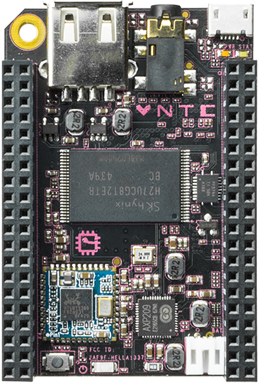

Next Thing Co. CHIP (ntc-chip)
|
 Next Thing Co. CHIP | |
| Manufacturer | Next Thing Co. |
|---|---|
| Name | CHIP |
| Codename | ntc-chip |
| Released | 2015 |
| Category | testing |
| Original software | Debian on Linux 4.4 |
| Hardware | |
| Chipset | Allwinner R8 |
| CPU | 1x 1.0 GHz Cortex-A8 |
| GPU | Mali-400 MP1 |
| Display | Composite video |
| Storage | 8GB MLC NAND |
| Memory | 512 MB DDR3 |
| Architecture | armv7 |
{kind=link}
Status: Kernel compiles and boots, u-boot needs to be packaged
| USB Networking | |
|---|---|
| Flashing | |
| Touchscreen |
Unavailable
|
| Display | |
| WiFi | |
| FDE | |
| Mainline | |
| Battery | |
| 3D Acceleration | |
| Audio | |
| Bluetooth | |
| Camera |
Unavailable
|
| GPS |
Unavailable
|
| Mobile data |
Unavailable
|
| SMS |
Unavailable
|
| Calls |
Unavailable
|
| USB OTG | |
| NFC | |
| Accelerometer |
Unavailable
|
|---|---|
| Magnetometer | |
| Ambient Light | |
| Proximity | |
| Hall Effect | |
| Barometer | |
| Power Sensor | |
| Camera Flash | |
|---|---|
| Keyboard | |
| Touchpad | |
| USB-A | |
| HDMI/DP | |
| Ir TX | |
| Ir RX | |
| Stylus | |
| Haptics | |
| Ethernet | |
| FOSS bootloader | |
Contributors
- Symmetrist
Maintainer(s)
- Symmetrist
Status
At the moment it is possible to build a pmOS image using the commands explained below.
However to boot this image we need to change u-boot configuration, and unfortunately the procedure explained below does not work on all the version of u-boot for CHIP around.
The next step is to package and compile u-boot to provide a uniform bootloader for pmOS.
Users owning this device
How to enter flash mode
The CHIP has two different flashing modes:
- FEL mode: used to flash bootloader and rootfs
- Fastboot mode: used to flash rootfs
To enter FEL mode:
- Connect the FEL and GND pins with a jumper cable
- Power on the CHIP
To enter Fastboot mode:
- Connect an serial (UART) USB adapter to UART1-TX, UART1-RX and GND
- Power on the CHIP
- Press enter during boot up to access the U-Boot console
- On the console type
fastboot 0
Configure U-Boot
PostmarketOS loads an initramfs together with the kernel, while original Debian installation only used the kernel.
To boot PostmarketOS we need to change the U-Boot configuration to support the initramfs.
From the U-boot serial console issue the following commands:
- Print the current value of the
bootcmd, save it in case you want to restore it later.
> printenv bootcmd
- Change the
bootcmdvalue
> printenv bootcmd
> setenv bootcmd "gpio set PB2; ${bootcmd_fel}; ${boot_initrd};"
> saveenv
Create the UBIfs image
- Configure the installation and build the system
$ pmbootstrap init
$ pmbootstrap install
In workdir/chroot_rootfs_ntc-chip there is the rootfs for your ntc-chip
The following commands needs to be launched from your pmbootstrap workdir
- Copy dtb from linux-ntc-chip
$ sudo cp cache_git/pmaports/device/testing/linux-ntc-chip/sun5i-r8-chip.dtb chroot_rootfs_ntc-chip/boot/
Install mtd-utils from your distro repositories e.g. pacman -S mtd-utils
- Create the UBIfs image
$ mkdir ubi
$ sudo mkfs.ubifs -m 16384 -e 0x1f8000 -c 2000 -r chroot_rootfs_ntc-chip ubi/ubifs.img
$ sudo chown youruser:youruser ubi/ubifs.img
$ ubinize -o ubi/ubi.img -m 16384 -p 2MiB -s 16384 cache_git/pmaports/device/testing/device-ntc-chip/ubinize.cfg
$ img2simg ubi/ubi.img ubi/ubi.img.sparse 2097152
Flash the UBIfs image
- Enter fastboot mode as described above
- On your computer
$ fastboot erase UBI
$ fastboot flash UBI ubi/ubi.img.sparse
$ fastboot reboot